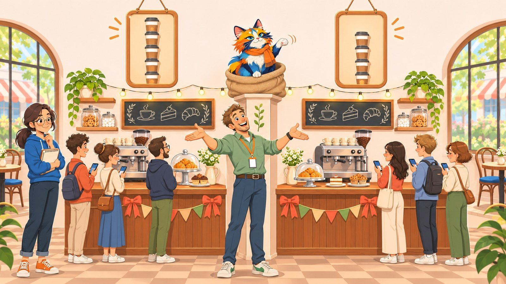
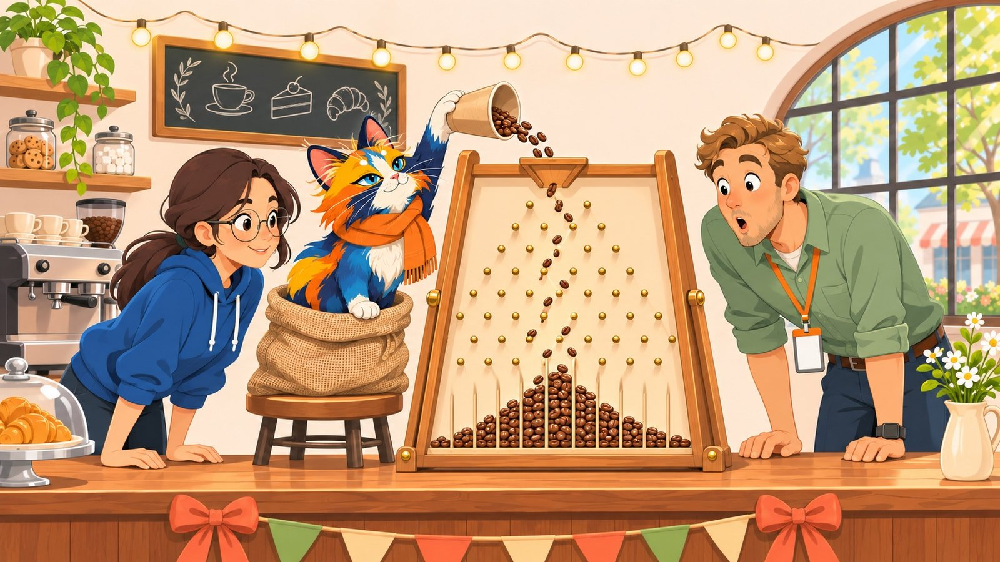

Шаг 3 из 10
Шум есть всегда

Теперь гости поделены честно: по хешу, каждый в своей группе. Проверим самое простое. Если обе группы видят одно и то же приложение, будут ли у них одинаковые цифры?
Алиса запускает тест, где ничего не меняется

Алиса, зачем тебе эксперимент, в котором обе группы видят старое приложение? Там же будет ноль.
В обеих группах заказ делают 10 % зашедших в приложение. Изменений нет никаких. Какую разницу в конверсии покажет такой тест?
Выбери вариант.
По сто гостей в каждой группе
Каждый кружок — гость. Закрашен — сделал заказ. Шанс заказать у всех одинаковый, 10 %. Перемешивай гостей и смотри, что выходит.
А если гостей тысячи?
Тот же тест без изменений, но в каждой группе по 1000 гостей. Запустим его 100 раз. Как думаешь, в скольких запусках какая-нибудь из групп обгонит другую на 10 % и больше? Например, 10 % против 11 %.
Запусти тест.
Боб каждое утро смотрит дашборд

Обе группы снова одинаковые, в каждой по 1000 гостей в день. Вот конверсия по дням за две недели.
Три вопроса про шум
В A/A-тесте по 2000 гостей в группе. Конверсия 10,4 % против 10,0 %. Значит, где-то баг?
При 2000 гостях в группе конверсии одинаковых групп обычно расходятся примерно на процентный пункт: 10,0 и 10,9 % — обычное дело. 10,4 против 10,0 — нормальный шум.
Что происходит с разбросом между одинаковыми группами, если гостей в них становится больше?
Чем больше гостей, тем меньше случайные везения влияют на общую долю. В игрушке при 100 000 гостей разница почти всегда меньше пары процентов.
Зачем запускать A/A-тест, если в нём ничего не меняется?
A/A проверяет, что группы делятся правильно, а метрики считаются одинаково. И показывает, какие разницы бывают сами по себе. Если A/A «значимо» нашёл эффект, ищи баг.
Разница есть всегда
- Даже одинаковые группы почти никогда не дают одинаковых цифр: кому-то случайно достались любители заказывать.
- Чем меньше гостей, тем больше разброс. При 100 гостях в группе одна группа запросто обгоняет другую в полтора раза, при 1000 — на 10–25 %, при 100 000 — на 1–3 %.
- «Лидер» на дневном графике меняется сам по себе. По одному дню ничего не решаем.
- Вопрос A/B-теста: больше ли разница, чем обычно бывает без всякого эффекта.
Теперь у того, что мы сделали руками, есть названия:
- A/A-тест
- эксперимент, где обе группы видят одно и то же; показывает, какие разницы бывают сами по себе, и проверяет, что всё считается правильно
- Шум
- случайный разброс цифр, который есть даже без всякого эффекта

Дальше, шаг 4: у шума есть форма. Узнаем, почему средние по толпе всегда складываются в колокол, даже если люди совсем непредсказуемы.